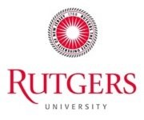

B2B: Bridge to the Baccalaureate
The B2B is a National Science Foundation Grant with the goal to increase the number of minority STEM students (Spanish, Black, American Indian, Native Hawaiian and South Pacific Islander) transferring from Bergen Community College to a 4 year College. Minority students are the recipients of this grant because their graduation rates in these high paying jobs (see: What are STEM salaries?) are significantly lower than those of other groups.The strategies adapted in the implementation of this grant are those that have proved successful in increasing STEM student success, research opportunities, creation of a STEM cadre i.e., a learning community of STEM students, easy access to tutoring help, development of mentoring relationships with faculty and student mentors, and establishment of relationship with local 4 year colleges within the B2B LsAmp consortia that will facilitate your making a good connections at these schools and insure a smooth transition to the school of your choice.
Once at one of these participating schools you will be welcomed in under the LSAMP grant which will provide further assistance to ensure your success and even facilitate your receiving a free graduate education.
 What does Bergen offer Stem students B2B?
First annual B2B writing contest!
The winners of the B2B writing Contest
What does Bergen offer Stem students B2B?
First annual B2B writing contest!
The winners of the B2B writing Contest
 Math League Exam
B2B mentors featured in Torch article
Carlos Sierra: B2B Tutor and STEM Student Union President Active with the Cerullo Learning Assistance Center.
Math League Exam
B2B mentors featured in Torch article
Carlos Sierra: B2B Tutor and STEM Student Union President Active with the Cerullo Learning Assistance Center.
We will contact you and invite you to choose the activities you wish to participate in and advise you of opportunities for exploring four year colleges such as BCC sponsored visits to the campuses and tours of STEM facilities and connections with advising at these colleges.

The Northern New Jersey Bridges to Baccalaureate (NNJ-B2B) Alliance is a partnership of (5) public associate degree institutions of Northern New Jersey committed to assisting underrepresented minority students in successfully transferring into a baccalaureate STEM program.
NNJ-B2B forms a synergistic partnership with the GS-LSAMP, a highly successful NSF funded project headed by Rutgers University- Newark that includes eight largely public four year colleges and universities in the region to develop a transformative model for streamlined transition from 2-4 year institution.
- 
Bergen Community College provide B2B students with research opportunities, participation in science related conferences and research stipends during the summer months. For more information come to room S315.